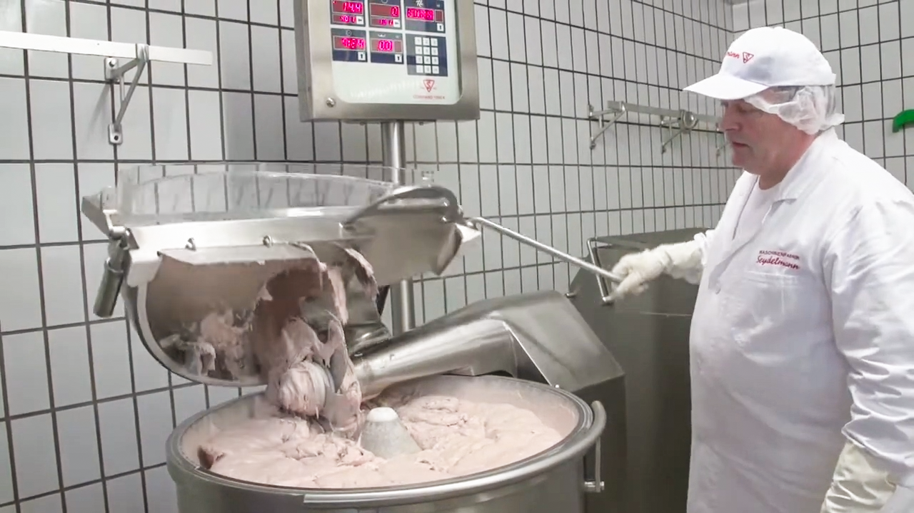
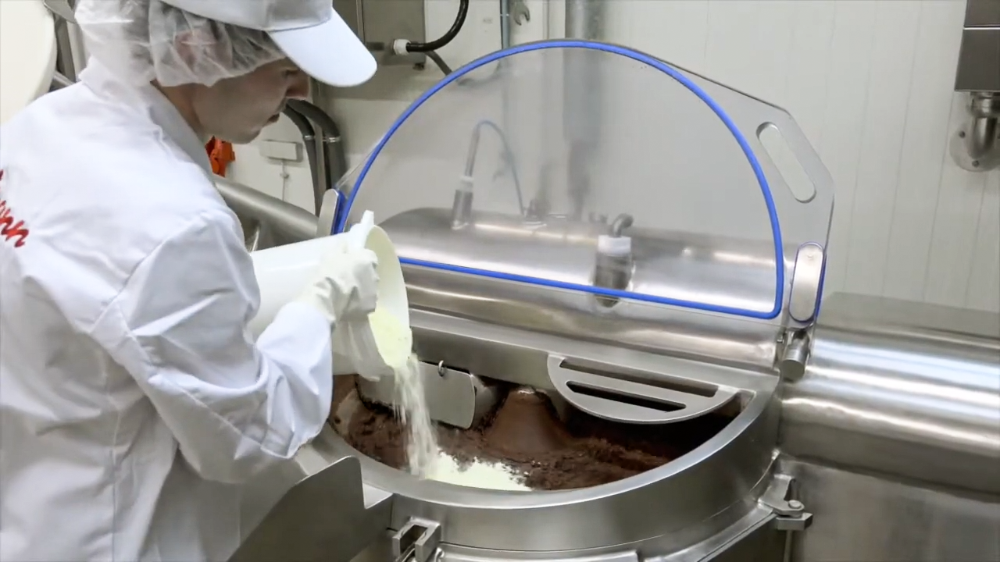

SEYDELMANN
SEYDELMANN カッター
（ボールカッター・サイレントカッター）
食感・粒度・保水性・結着性を決める重要工程。ソーセージ・練り製品・チーズ製品など最終製品の品質を決める中核加工システム
SEYDELMANN カッターとは
Seydelmannカッターシリーズ（ボールカッター・サイレントカッター）は、回転するボウル内で高速回転ナイフにより食品原料のチョッピング、混合、乳化、分散、均質化を行う食品加工機です。食肉加工品をはじめ、魚肉練り製品、チーズ製品、ソース、プラントベース食品、チョコレート、ペットフードなど幅広い製品に対応します。原料特性や加工条件に応じて、最終製品の食感、粒度、保水性、結着性をコントロールする重要工程を担います。品質の安定化、歩留まり向上、工程集約、高付加価値商品の開発を支援します。




混合・乳化向け
エマルジョンを実現
集約
1台で実現
実機評価が可能
- 食感比較
- 粒度評価
- 乳化品質評価
- 結着性評価
- 保水性評価
- 歩留まり評価
量産化まで支援
ライン提案
- SEYDELMANN グラインダー／ミキサー／ミキサーグラインダー
- Stephan UMシリーズ／MCシリーズ
- handtmann 真空定量充填機
- MULTIVAC 深絞り包装機／トレーシーラー
- MULTIVAC ラベリングシステム／画像検査システム
まずはお気軽にお問い合わせください。
Hygienic Design
食品工場向けに衛生性と洗浄性に配慮した設計を採用しています。
国内サポート体制
導入テストから立上げ、アフターサポートまで国内スタッフが対応します。
グローバル導入実績
SEYDELMANN カッターシリーズは、食肉、水産、乳製品、プラントベース食品、ペットフードなど幅広い分野で採用されています。
チョッピング、混合、乳化、分散を高速かつ均一に行う食品加工機です。
ソーセージ、ハム、レバーパテ、魚肉練り製品、チーズ製品、ソース、プラントベース食品など幅広い製品に使用されています。
空気混入を低減し、タンパク抽出を促進することで、保水性や結着性の向上、発色安定化、製品品質の安定化に貢献します。
スチーム加熱を利用し、加熱と加工を同時に行うカッターです。工程集約と生産時間短縮を実現します。
High-Efficiency Cutterは、チョッピング・混合・乳化を行うスタンダードモデルです。Vacuum-Cooking Cutterは真空機能と加熱機能を備えたモデルです。
ファインエマルジョン向け、万能タイプ、非加熱ソーセージ向けなど、製品ごとに最適な食感や粒度を実現できます。
はい。代替肉や植物性タンパク製品の加工にも対応可能です。
SEYDELMANN カッターシリーズは、チョッピング、混合、乳化を高速かつ均一に行い、食感、粒度、保水性、結着性などをコントロールしながら製品品質を作り込むことを得意としています。High-Efficiency Cutterだけでなく、真空機能や加熱機能を備えた Vacuum Cutter、Cooking Cutter、Vacuum-Cooking Cutterもラインアップしています。一方、Stephan UMシリーズは、独自のステファン原理により、カット、混合、乳化、分散、加熱、冷却、真空処理を1台で行う多機能加工機です。特に高粘度製品やペースト製品、プロセスチーズ、ソース、クリーム製品など幅広い用途に対応します。
製品によって最適な設備は異なります。求める食感、粒度、保水性、生産能力、加熱工程の有無、最終製品の特性によって最適な設備構成は変わります。LICでは同じ原料を複数設備で比較評価し、お客様に最適な加工方法をご提案します。
グラインダーは主に原料を一定サイズに粉砕する設備です。一方、ボールカッターは粉砕だけでなく、混合、乳化、分散、均質化を行い、食感や保水性、結着性までコントロールできます。
ボールカッターは粗挽きからファインエマルジョンまで幅広い粒度に対応できます。乳化機は主に細かなエマルジョン形成に特化しています。製品特性によって最適な設備は異なります。
一般的にはグラインダー工程の後、充填工程の前に配置されます。チョッピング、混合、乳化、分散、均質化を行い、最終製品の品質を決定する重要工程です。
はい。LICにてお客様原料を使用した実機テストや加工比較評価が可能です。